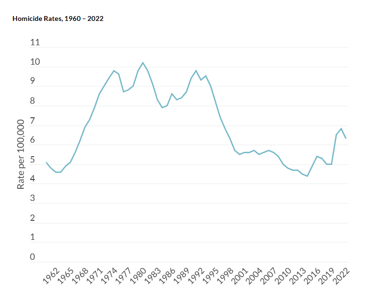
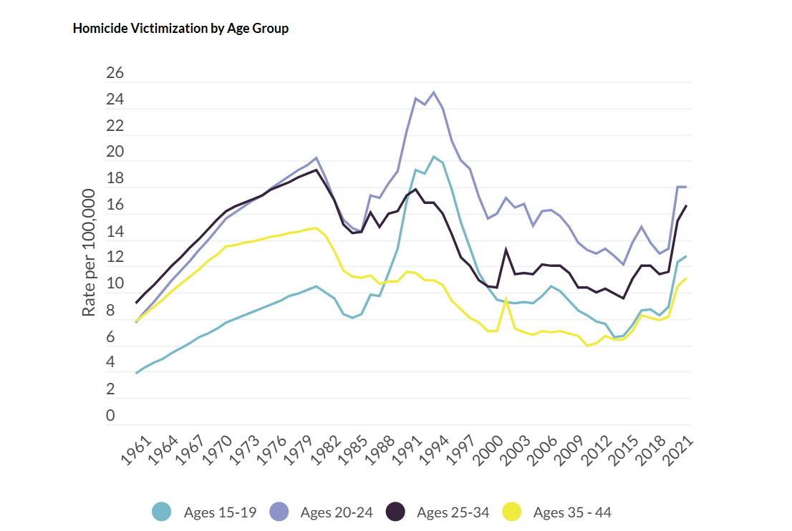
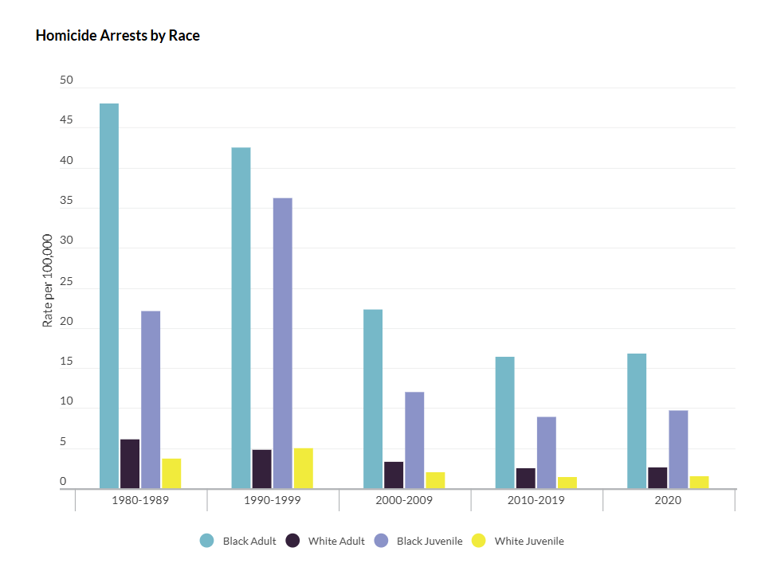

What Is Homicide?
1. Defenition
- Homicide is the act of one person intentionally causing the death of another. It can occur in a variety of ways, including murder, manslaughter, and justifiable homicide (such as self-defense). The key factor that defines homicide is that it involves the killing of one individual by another, whether intentionally or through recklessness or negligence.
2. Categories of Homicide
- Murder: The unlawful and intentional killing of another person, usually with malice or premeditation.
- Involuntary manslaughter: The unlawful killing of another person without malice or premeditation, often due to recklessness, but not as planned or intentional as murder.
There are two main categories of homicide:
3. Causes of Homicide
- Homicidal thoughts and behaviors are oftentimes caused by health issues. These include mental illnesses, childhood traumas, substance use, impulsivity, etc.
4. Effects of Homicide
- Creates a sense of insecurity in society, hinders social and economical development. Traumatizes (PTSD) individuals, especially young children (can even hinder their development). Can cause mental health issues in victims family/friends. Continuous homicide can cause it to be normalized in affected communities. Overall negatively affects the society, economy, and health/well being of a society.
Statistics
1. Homicide Rates (1960 - 2022)
-

2. Homicide Victimization by Age Group
-

3. Homicide Victimization by Race
-

4. Homicide Victimization by Race and Sex